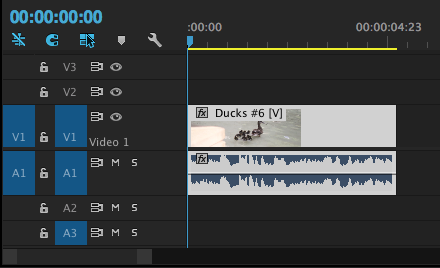
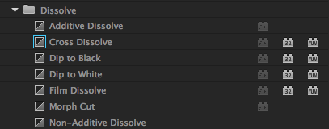

Adobe Premiere Pro
Introduction to Professional Video Editing
Introduction
Adobe Premiere Pro, part of the Adobe Creative Suite package, is a powerful timeline-based video editing software application. This sophisticated editing platform is considered to be an industry standard, and is used worldwide by professionals to edit video footage.
In this class, we introduce the video editing essentials of Premiere Pro. We will work on a project that illustrates the basic principles of organizing and editing footage together. There are many advanced editing techniques that this manual does not cover.
About This Class
This class introduces basic concepts and functions of Adobe Premiere Pro Creative Cloud. By the end of this class, you will have performed basic timeline edits, created a simple video, and be ready to explore and learn more advanced techniques, either through the appendix of the manual or on your own.
This manual provides a basic introduction to the Premiere Pro interface and explores commonly used features by guiding students through the steps in creating a simple narrative scene.
Premiere Pro is a good choice for video editing because it is user-friendly, it supports high resolution video and integrates easily with other creative suite applications like Photoshop and After Effects. Premiere Pro is used to edit, manipulate, and export video projects. Professionals use the application for a variety of reasons, including editing on multiple tracks, correcting video exposure and color, adding lighting effects, adding title sequences with built-in templates and styles, and exporting video in various high definition and web-friendly formats.
During this class, students will:
-
Become familiar with the Premiere Pro environment and workflow
-
Gain experience performing basic video editing techniques
-
Gain experience exporting a final video project
This manual is intended to serve as an introduction to the application and video editing in general. In order to explore more advanced techniques, students should consider exploring the appendix of this manual or checking out lynda.com.
Interface and Navigation
Exercise: Launch Premiere Pro
-
To launch Premiere Pro, click on the Premiere Pro icon in the dock on a Mac operating system. In the Windows operating system, navigate to Premiere Pro in the start menu. A welcome menu will appear, giving you the option to create a new project, open a previous project, or get help. If you have recently worked in Premiere Pro, there will also be a list of recent projects for you to choose from.
-
Click New Project to start a new project file.
After selecting New Project, a New Project dialog box will appear where you can change the general settings. We can leave the preset general settings alone, but we want to make sure we are saving our project in a place where we can find it again. By default, Premiere will save the project in the last place you saved your previous project or in a folder that stores Premiere Pro content on your computer.
-
Click Browse and navigate to the location where you want to save your project (for the purpose of this class, the desktop is good).
-
Name the project something topical, like "My First Video" or "An Epic Video Adventure".
-
Click Okay.
Premiere Interface
The Premiere Pro workspace exhibits some familiar features common to other Adobe applications. There may also be similar features to other video editing software like Final Cut Pro or iMovie. The interface has five main panels, or project monitors, plus a tool bar, that we will explore further in this section.

-
Source Monitor: The Source Monitor is in the top left corner of the interface. This is where you will decide the start and end of your clips, or the in and out points. You will have much more footage than you will put in your timeline, so this panel helps you cut out the specific parts you want.
-
Program Monitor: The Program Monitor is to the right of the Source Monitor in the top right corner of the interface. This shows exactly what your viewer sees of your project: your finished show. When you play your project from your timeline, the video is displayed here.
-
Timeline: The Timeline is directly below the Program Monitor in the bottom right corner of the interface. The Timeline is a graphical view of your movie from beginning to end. This is where you construct your movie by dragging clips and audio from the Source Monitor and Project Pane. The Timeline is sometimes referred to as your sequence. When you play what is in your Timeline, it will appear in the Program Monitor.
-
Project Pane: The Project Pane is to the left of the Timeline in the bottom left of the interface, directly below the Source Panel. This is where all your media and projects are stored, along with copies of your sequences.
-
Audio Meters: The Audio Meters are directly to the right of your Timeline. Right now it just looks like a black bar, but when you play a clip, the levels in the audio meters will move to show your decibel levels (dB).
-
Tool Bar: The Tool Bar is directly to the left of your Timeline. This is where you can access all of the different tools in Premiere Pro. We will go over tools in detail later in the manual.
Exercise: Adjust Preferences
Preferences allow you to change specific setting in Premiere Pro. Usually, the default settings will be sufficient, but it is good to know what they are.
-
Select the Premiere Pro menu.
Premiere Pro > Preferences > General...
A Preferences window will appear with the general settings. One important setting to note right away is the Auto Save. You can set the automatic save to whatever duration you would like. This can be very helpful if you are someone who forgets to save often.
-
Select Auto Save in the left side of the Preferences Window.
-
The default setting is every 15 minutes. Change this setting to every 10 minutes, and make sure "Automatically Save Projects" is checked.
-
Click OK to close the Preferences Window and save your changes.
Resetting the Workspace
If you ever mess up your workspace a lot and want to go back to the original settings, you can easily to do in the Window menu.
Window > Workspace > Reset To Saved Layout
Now all of your monitors will go back to the default sizes and positions.
Importing and Organizing Media
Importing
Importing Media into Premiere Pro does not mean you are actually bringing the media into your project file, but rather you are pointing to where the media is on your computer. It is important to keep your footage in the same location or make sure you have it on an external hard drive so that you can access it each time you work on your project.
It is best to copy your media onto your computer and then import your media into Premiere Pro. This way, it will be in a location on your internal hard drive and you do not have to worry about losing it.
Exercise: Import Media
-
Navigate to File > Import
-
Navigate to the Class Files folder.
-
Select all three of the folders inside. Audio, Video, and Photos.
-
Click Import. It will take about a minute to load all of the media. You should see a dialog box showing you the progress of your import.
Once the media is imported, you will see the folders in the Project Pane. Premiere Pro will preserve your file structure after importing, so you will see organized folders that you can open.
-
To open a folder, double-click on the folder, and it will open in a different window.
Congratulations! You have successfully imported footage.
Exercise: Folders Opening in the Same Window
When you are moving from folder to folder within Premiere Pro, it can sometimes get a little cluttered. This is one way to help with the clutter.
-
Navigate to Premiere Pro, then Preferences.
Premiere Pro > Preferences > General
-
Navigate to Bins about 3/4th down the page.
-
For the double-click option choose, "Open In Place".
Now if you click on a folder it will not pop up in a new window.
Viewing Media in the Project Pane
Each clip will have the title of the file in the bottom left corner and the duration of the clip in the bottom right corner.
First, you will notice that your clips are automatically imported as images so you can see what you are working with. In the Project Pane, you can preview your clips by scrubbing over them with your cursor. When you click on a clip in the Project Pane to select it, you will notice a blue bar with a gray slider appear at the bottom of the clip image. Clicking on the gray slider and dragging it across the clip allows you to preview your clip and quickly see what footage your clip contains.
Icon View vs. List View
Some people like to view their media files as icons, and others prefer a list instead. Luckily, Premiere Pro gives you either option.
In the bottom left corner of the Project Pane, you will see a highlighted box with an icon image To the left, you will see a box with a list image. To view your footage as a list, click on the list box.
Right next to the list and icon boxes, you will notice a slider with mountains next to it. This allows you to increase or decrease the size of your media display in the Project Pane. Clicking and dragging the slider will make your media files change in size in either the list or icon view.
Organizing Tools and Methods
Exercise: Renaming Media
Your footage will automatically be imported with the file name, which is often a generic number sequence. You can easily rename your footage in Premiere Pro to facilitate the editing process.
-
Click on any clip to select it.
-
Double-click in the bottom left corner of the clip over the generic name.
-
Rename the file.
Exercise: Using the Magnifying Glass to Search for Clips
You will often have much more footage than you need imported and there will be a lot of files to sort through. Using the Magnifying Glass to search for clips can be helpful to quickly find specific clips you need.
-
Click on the Magnifying Glass box in the bottom right corner of the Project Pane. You will see a dialog box appear with various search options.
-
Type in a word or number that has been assigned to a clip as part of the name. If they are numbered, for example, search for the number of the clip you want to find, like "3". Or perhaps you want every clip that has the word "Ducks" in the name.
-
Click Find and you will see a clip with that word or number highlighted in the Project Pane. If you continue to click Find, you will see each clip with it appear highlighted in the Project Pane.
-
Once you have found your desired clips, click Done.
Exercise: Organizing Media with Bins
Bins are simply folders to organize your footage. We already have three bins, Audio, Video, and Photos, based on the file structure we imported. Now, let’s create a new bin for anything extra we might create, in order to better organize our footage.
-
To add a new Bin, click the folder box in the bottom right corner of the Project Pane, next to the magnifying glass. A new Bin will appear in your Project Pane with the title “Bin 01” highlighted so you can rename it right away.
-
Click on the title and Rename it “Subclips”.
Exercise: Reconnecting Offline Media
Like mentioned before, your media needs to stay in the same location in order for Premiere Pro to be able to find it after importing. Let’s move our footage to show what you need to do to reconnect your media to Premier Pro.
-
Create a new folder on your desktop to move the footage to.
-
Click and drag your Footage folder to this new folder. In Premiere Pro, you will now see your media as a question mark icon, signifying that Premiere Pro does not know where your media is after we moved it.
-
Click on the first clip and Select All by holding shift and clicking on the very last clip.
-
Right click on the highlighted clips and select Link Media…
-
Locate the new folder and clip and select Open.
Because we have all of our clips highlighted, Premiere Pro will automatically reconnect all of our footage.
The Timeline
Sequences
We are now ready to learn how to create a sequence. A Sequence is a series of video and audio clips assembled in the Timeline, or the basic layout of our video project. A sequence must have at least one video track and one audio track, although it can have multiple.
In Premiere Pro, you can create one or more sequences, and each sequence can have different settings from the others. You will see that there are many options in the Sequence Presets tab. If you know you have to edit to a specific format, you can look through all of the presets and select it. Before creating a sequence, however, it is important to make sure that all the files you would like to work with are imported into Premiere Pro.
Exercise: Creating a Sequence
-
Navigate to File > New > Sequence. A dialog box should appear.
-
Type in something topical as the name of the sequence ("Act 1: The Quest", etc). If you know you have specific settings for your video, you can select them here. However, for the purpose of this class, we will just use the default settings. Premiere Pro is smart enough to automatically tailor its Sequence settings to the settings of your video clips and photos.
-
Accept the choices and click OK.
Adding Media to the Timeline
Now that there is a Sequence, we can start adding footage to the Timeline to create our video. Make sure that you have your new sequence clicked in the Project folder.
Exercise: Add clips to the timeline

-
Navigate to your Class Files folder.
-
Click and hold any clip from the folder.
-
Drag the clip over to the Timeline.
-
When you do this, if your Sequence setting do not match your video clip settings, Premiere Pro will ask to change the Sequence Settings. Click “Change sequence settings” so they match your footage settings. This is the most basic way to move clips into a sequence.
Using Inpoints and Outpoints in the Project Pane
Now that we have a better understanding of how to create a Sequence and how to move clips into the Timeline, let’s look at how to take the exact part of a clip we want and put it into the Timeline. We are going to look in the Project pane and make some changes so we can better see the clips we are working with and make it easier to navigate between them.
This part will teach you how to edit clips without ever leaving the Project pane. Use this method if you have very easy in and out points for the footage you are working with. After this section, we will cover another way to define in and out points for more complicated footage.
-
Click on the Class Files folder.
-
Click onto a clip while still in the Project pane.
-
You'll need to rename the clip something else more specific, since you are only choosing part of the original clip. It would be confusing if both the original clip and the shorter selection had the same name.
-
Scrub across the view until you find the moment you would like your selection to begin.
-
Press “i” on your keyboard. “I” is the short cut for inpoint in Premiere Pro.
-
Scrub until the moment where you want to end the selection, and press “o” on your keyboard. “O” is the short cut for outpoint in Premiere Pro. Notice that the time of the clip has gotten shorter in the bottom right hand corner of the preview.
-
Drag the clip over into the Timeline.
Using Timecodes in the Source Monitor
Sometimes using the Project pane does not give enough control over the in and out points. Another way of splitting the footage is to use the Source monitor. In your Premiere Pro window the source monitor is the box in the upper left hand corner. This gives you a thorough look at the footage and enables you to make extremely precise selections.
When looking at the Source monitor, there are a couple of things to note. First in the right bottom corner of the panel Premiere Pro tells you the time duration of the whole clip. (If you have an inpoint and outpoint selected, it tells you the time of that subclip.) In the bottom left corner, you can see the timecode. This depends on where the yellow scrubber is at on your clip.
An example of a timecode would be 00;05;36;20. This reads 5 minutes, 26 seconds, and 20 frames. This is useful if you have a long clip and you want to take multiple takes out of it at a later date. You would figure out the exact time codes for the inpoints and outpoints and save them for later.
-
Double click on the clip that you want to show up in the Source Monitor.
-
Scrub through the clip until the timecode at which you wish to start your selection. At this timecode, mark an inpoint by pressing the “i” key on the keyboard or by pressing the inpoint button in the Source Monitor.
-
Scrub through again, until the timecode at which you wish to end your selection. At this timecode, mark an outpoint by pressing the “o” key on the keyboard or by pressing the outpoint button in the Source Monitor.
-
Click the “Go to Inpoint” button and press the spacebar to see the footage you will be inserting into the timeline to make sure it is what you desire.
-
Click and drag the video from the Source Monitor into your timeline.
Exercise: Creating Subclips
Sometimes when you are working with a very long clip it would be easier to use it in small sections, much like what we did with the previous exercise. Once the clip is many little clips, it is easier to work with them. Instead of having to remember timecodes for sections of a long piece of footage that you liked, you can create a subclip and have just that section saved to refer back to without scrubbing through the entire length of the longer footage.
-
Double click on a clip to move it into the Source Monitor.
-
Mark an inpoint and an outpoint.
-
Navigate to Clip > Make Subclip
-
In the title box, name the subclip.
-
Create a few more of your favorite moments from the footage, and give them all new names.
-
They should now appear in the Project Pane. Move them into the timeline to add them to your sequence.
At this point, you've got more clips than you started with. This might be a good time to start utilizing new bins to sort through all of it. You could drag your newly created subclips into the Subclips bin that you created, for instance.
Timeline Organization
Exercise: Using Markers
On the clips in the timeline we can create notes on the clips called markers. In Premiere Pro we can create these markers at a set timecode. This is helpful for organization and for when you are cutting together footage. This can be a marker for the sequence or a specific clip. To make it a clip marker remember to select the clip before pressing "m".
-
Select one of the clips in the timeline.
-
Navigate to a point in the clip you would like to create a comment marker. Click on the clip.
-
Click the wrench in the upper left hand toolbar and make sure that Show Clip Markers is checked.

-
Press “m” on your keyboard.
-
In the dialog box called Comments you can add notes to yourself about this part of the project. Notice how the time of the marker is noted.
Edits and Tools
Now that you can import footage, navigate through the panels and create subclips, we will start looking at the more in-depth editing in the Timeline.
Exercise: Using the Razor Tool
While creating videos, there may be times when you want to place a new clip in the middle of a pre-existing clip, in order to clarify or enhance the narrative. You can use the Razor tool to cut up a clip, essentially making it two new clips. Once we do that, we can move the clips around in the Timeline to fit our needs.
To use the Razor Tool, select it in the Tool Bar and hover over a clip on your timeline. You should see a red line appear. Once you have found the moment you want to split the clip at, click on the red line. This splits the clip in two.
Exercise: Adjusting Edit Points
Sometimes during the editing process, you may decide that some clips that are already in the Timeline need to be longer or shorter. Instead of deleting the clip and redoing the inpoints and outpoints, you can simply edit the clip in the timeline.
-
Click onto a clip in the timeline so it is highlighted.
-
Hover over the left side of the clip. Notice how there is a red arrow bracket; that means the clip can be shortened or elongated. In this case we will be shortening the clip.
-
While the red arrow is visible, Click and drag the clip to the right, shortening it.
Doing this may leave a gap in your timeline, do not forget to move the other clips accordingly. Similarly, be careful of making a clip longer with this method, if you overlap other clips on the timeline you will overwrite them.
Exercise: Insert Edits
Adding clips into the middle of Timeline video sequence can get tedious if you can only click and drag the clips to move them, so data isn’t lost. This is another way to move material from the Source Monitor to the Timeline. This type of insertion is non-destructive; it will just move all the clips over from where the clip is inserted.
-
Choose a clip to bring into Source Monitor.
-
Mark an inpoint and outpoint.
-
Make sure the blue scrubber is at the point in the sequence where you want to insert the clip.
-
Click the Insert Clip button in the Source Panel.

Exercise: Roll Edits
A roll edit can be used to lengthen one clip and shorten another so that they don’t add or take away length to a video project, or to be about the same or exactly the same amount of time.
-
Bring a clip into the Source Panel, make in and out points.
-
Bring it into the Timeline.
-
Do the same with another clip.
-
Click onto the Rolling edit tool, the fourth one down from the top of the toolbar or press “N” on the keyboard.
-
Make the second clip long and the first clip shorter by pulling left with the roll edit, or pull right to do the opposite.
Exercise: Ripple Edits
Let’s say that you have two clips with a big gap between them where there is no action, about 5 seconds or so. You could shorten the clips and then move all the footage over, or you could perform a ripple edit. This editing tool moves an edit point, causing the rest of the timeline to move the same amount to compensate. That way there are no gaps, and all your footage is moved over with the edit.
-
Navigate in your Timeline to a smaller clip that you know has more footage than is being shown in the Timeline.
-
Click the Ripple Edit tool in the toolbar, the icon third down, or press “B” on the keyboard. Hover over the end of a clip and notice how the arrow is now yellow instead of red.
-
Move a clip’s endpoint out so it is longer; notice how the timeline adjusts to the edit.
Exercise: Deleting Clips
During the video process some clips need to be cut because of time constraints or because they just don’t make sense for the narrative any more. There are two main ways to delete material: a cut delete and a ripple delete. Both have benefits, and it is up to the creator to decide which to use and when.
Cut Delete: This edit cuts and leaves a blank space.
-
Click onto a clip.
-
Click the delete button on the keyboard.
Ripple Delete: This edit does not leave a blank space, but rather it puts to two closest clips together.
-
Choose a clip in the middle of two other clips.
-
Click Option + Delete.
Audio Edits
Editing audio can make or break a video. In this next part of the manual, we will be exploring different ways to change the audio of the clips we have. Working with the levels of the audio. Keep in mind that this is just the basics. There are many more ways to edit audio in Premiere Pro. If you are interested, check out some Lynda tutorials online to learn more.
Exercise: Unlinking Audio and Video tracks
For this video specifically, we want to unlink the audio from the clips so we can add music over the tracks.
-
Right click on the a track and select Unlink from the menu that pops up.
-
Repeat for all of the clips in the Timeline.
-
Delete all the audio clips from the audio 1 timeline spot.
-
Navigate to the Project Pane and drag a file from the Audio bin into the Audio 1 spot in the timeline.

Your timeline would end up looking something like this.
Exercise: Adjusting Audio Levels in the Source Monitor
This is just one place you can adjust the audio levels of videos. Earlier in the manual we looked at the Effects Control in the Source Monitor. For basic or advanced audio editing we can utilize this tool once again.
-
Double click on the audio clip in the timeline to view it in the source panel.
-
Click into Effect Controls.
-
Click the arrows for all three effect options. We will be working with the volume only, but here are what all three do: Volume–This effect can make the whole video louder or softer depending on which value is put for the decibel level. Channel Volume–This effect can change the stereo sound in either the left or the right speakers. Panner–This effect changes the sound from one side to the other. Think of like a car zooming past or a bell curve, it starts quietly on one side of the speakers then gets louder equal on both, then it exits on the other side quietly.
-
Make sure to click the stopwatch to turn keyframes off, in order to raise the whole level of the track.
-
Click the arrow next to Level. Change the decibel level of volume to 5.
-
Listen to the this level and the next to hear the difference.
-
Change it back to 0.
Exercise: Adjusting Audio Levels in the Timeline
It is also possible to adjust the audio in the Timeline. It doesn’t have the precise decibel control like the Source Monitor, but it is still a good way to edit audio in Premiere Pro.
-
Click on the wrench icon in the upper left hand toolbar and choose "Expand All Tracks".
-
To change the global sound of this clip now all you would have to do is pull the middle line between the two levels of the audio.
-
While the clip is playing you can move the white line up and down to make the best audio levels.
Adding Video and Audio tracks
Sometimes Premiere Pro’s three video and audio tracks are not enough for a project. It is simple to add a fourth or fifth, or even a 10th track if the project demands that many tracks. To do this, right click on the video menu side of the Timeline and click add tracks. Once you do this you will see a pop up menu. If you want to add more than one video or audio track, change the number. Otherwise, select OK.
Titles and Transitions
Titles
Throughout the filmmaking process there are times where you would like text to come up on the screen. You may want to have credits to showcase the talent in your film, or you would like an opening title. In Premiere Pro you can do all of these things with titles. Titles are the frames that have no animation. They can be over a black screen or you can put them over footage.
Exercise: Adding Still Titles
-
Navigate to the Title > New Title > Default Still
-
On the pop up window, click Ok. The settings should be already figured for the project being worked on.
-
Make sure the tool selected is the Type tool.
-
Type the name of your video.
-
Change the font family to American Typewriter.
-
Navigate to the left side and center the text by pressing the center text box option.
-
Navigate to the Project Pane and select the Title, pull it into the timeline into the video two spot at the beginning of the video. See how it appears over the image?
-
Insert this before the footage to see it in just a black title spot.
Exercise: Rolling Credits
This is used the most with end credits for films.
-
Navigate to Title > New Title> Default Roll.
-
Once again, click Ok for the first pop up window. Everything should be configured to your project.
-
Type the credits for the video.
-
Navigate to Title > Roll/Crawl Options
-
Put a check mark to both start off-screen and end off-screen so the credits roll.
-
Place this after all the footage.
Transitions
Premiere Pro has many different effects for transitioning between any format--still, video, or title. There are many different options besides the one featured. There are transitions for both the audio and the video of Premiere Pro. If you would like to know more, play around in Premiere Pro or watch a tutorial on Lynda.com.
Exercise: Utilizing Transitions

-
Navigate to the Effects screen in the Source Monitor.
-
Choose Video Transitions.
-
Then navigate to Dissolve > Cross Dissolve
-
Drag this effect to the start of the video.
-
Drag more to different points in the video, between clips.
-
Navigate to the Audio Transition menu, then to Crossfade > Constant Gain.
-
Place this effect at the beginning of each music sections of the film.
-
Navigate to Crossfade > Exponential Fade
-
Add this to the end of each music section.
Congratulations! You are now ready to export your project.
Exporting
Now that we are all finished with our project, it is time to export.
Exercise: Exporting a project
-
Make sure you Select the Timeline.
-
Navigate to File > Export > Media. You will be greeted with an exporting dialog box. For the most part, you won’t need to change a lot.
-
Under the Preset section, Select HD 1080i 29.97, H.264, AAC 48 kHz.
-
Under the Output Name section, click on the yellow clip name to rename your project and chose the saving location. A “save as” dialog box will appear.
-
Rename your project “The Thief” and save the project to your desktop.
-
Click Export. Congratulations! You now have a completed Premiere Pro movie project.
Exercise: Using the Project Manager
The Project Manager will collect all of your files and project into one location, similar to packaging in InDesign.
-
Navigate to File > Project Manager. A dialog box will appear, giving you some options for packaging your project folder.
-
Under Resulting Project, select “Collect Files and Copy to New Location”.
-
Uncheck “Exclude Unused Clips.” We want all our footage to transfer to this location.
-
Under Destination Path, click Browse and choose Desktop.
-
When you have change these settings, click OK.
-
Navigate to your Desktop and you will see a folder titled after your project. Here you will see your project, along with all the footage. This folder can now be transferred or copied to another location.
Appendix
In this section, we will go over a few more advanced editing techniques.
Exercise: Using Keyframes
Underlying the basic animation and effect functionalities of Premiere Pro are keyframes. A keyframe marks the point in time where you specify a property, such as position, opacity, or audio volume. To create a change in a property over time, you set at least two keyframes—one keyframe for the value at the beginning of the change, and another keyframe for the value at the end of the change. Premiere Pro then reads these marks and changes the clip’s properties over the time period that you have marked. The best way to learn key frames is to jump right in, so let’s start!
There are two ways to add keyframes: The Effect Controls panel and the Timeline panel. The Effect Controls panel displays all effect properties, keyframes, and interpolation methods at once. Clips in a Timeline panel show only one effect property at a time. In the Effect Controls panel, you have complete control over keyframe values. In a Timeline panel, you have limited control. For example, you can’t change values that use x and y coordinates, such as Position, in a Timeline.
Exercise: Adjusting Opacity using Keyframes
There are times where creators like to add video over top of each other to create a desired effect. To do this we can use keyframes and the timeline.
-
Move a clip to a video two track.
-
Take any clip and match the beginning up with the end of the clip before in the video 1 track, leaving a large amount of overlap.
-
Click onto the clip then go to Effect Controls. Drop down the triangle by opacity.
-
Scrub to the beginning of the clip; wherever the cursor is on the selected clip it will change the opacity of that spot and make a keyframe all by itself.
-
Bring the opacity down to 40. You can type this into the percentage.
-
Move the cursor to another spot later in the clip and make the opacity 60 percent. Notice how the line between the keyframes change?
-
Play from the beginning of the timeline. Make sure that the clip you would like in the end is at the top of the timeline opposed to the bottom.
Exercise: Adjusting Speed
In Premiere Pro, you can speed up or slow down the motion of a clip.
-
Select a clip in your timeline.
-
Right click on it and select the Speed/Duration option. A dialog box will appear for you to modify the speed settings of that particular clip.
-
In the Speed section, change the speed from 100% to 50%.
-
Select “Maintain Audio Pitch” so that you do not distort the sound of your clip.
-
Select OK. Now you can play your clip in the timeline and you will see that the speed is 50% slower.
Exercise: Overwrite Edits
Sometimes you just want to replace footage that you have with different footage, but you want it in the same spot. Instead of deleting the footage and performing an insert, you can just perform an overwrite edit. This will paste the new clip over the original clip in the Timeline.
Keep in mind that this edit will only overwrite for the length of the new clip, so you may end up with a piece of the original clip at the end of the overwrite, if you are overwriting in the middle of the video.
-
Navigate to the Project Pane and pull a clip into the Source Monitor.
-
Mark an inpoint, not an outpoint.
-
Put the red marker about three quarters of the way into another clip in the Timeline.
-
Press the overwrite button in the Source Monitor or drag the clip to the red line in the Timeline.
Exercise: Replace Edits
While an overwrite edit covers up any clip you put it over and maintains the new clip's length, a replace edit cuts the new clip to be the exact same amount of time as the clip replaced, in the same place. This is useful if you have another take that you want to put into a video, but you want it to be the exact same time as the previous clip.
When doing this, make sure that the inpoint that you need is marked in your source panel.
-
Take a clip into the Source Monitor and make in and outpoints.
-
Place any clip onto the end of our video, make sure it is only about 5 seconds long.
-
Grab a hold of the clip in the Source Monitor while holding down the option key and drag it over your clip.
-
Drop the video onto the clip. See how you now have the clip in the exact same time span?
Exercise: Using the Slip Tool
Sometimes during video editing, the timing is right, but the in and outpoints of a clip are wrong. In this situation the slip tool is the best edit to use. This keeps the exact timing that you have in the Timeline, but plays with the in and outpoints of the video.
-
Zoom into the beginning montage by using the “+” key.
-
Select one of the clips to play with the in and outpoints.
-
Click onto the Slip tool in the toolbar, the 7th icon down from the top, or press “Y” on the keyboard.
-
Click on the part you have selected and move the tool right and left. See the in and outpoints changing? Once you feel like you have a good clip, let go of the mouse.
Exercise: Using the Slide Tool
There might be times when you have three clips together, and you really like the middle clip, but you wish that it happened sooner. You could delete everything and move it, or you could use the slide tool so you do not create a gap in either direction of the middle clip.
-
Click onto the Slide tool, the icon 8th down on the toolbar or press “U” on the keyboard.
-
Click onto the clip you would like to stay the same. You can move it either way. Notice how the clips around adjust so it is the same timing.
Exercise: Using Color Correction
Color Correction allows you to fix some clips that would otherwise be unusable.
-
Select the Effects tab in your Project Pane. You will see many different options for Effects. You can click on any of the arrows to the left of the effect headings and see many more options.
-
Click on the dropdown arrow in the Video Effects heading.
-
Select Color Correction and you will see multiple options underneath this option as well.
-
Double-click on Fast Color Corrector.
-
Navigate to the Source Monitor and select the Effect Controls tab.
-
Select the clip you want to edit in the Timeline and make sure that the cursor is over that clip. You will see a window where you can edit the colors of your clip. There will be a big color wheel and many other editing options. The Color Corrector can be used to fix color balance and exposure. We recommend playing around with these options to see how the color and exposure changes in your clip. You will see these changes in the Program Monitor as you adjust them.